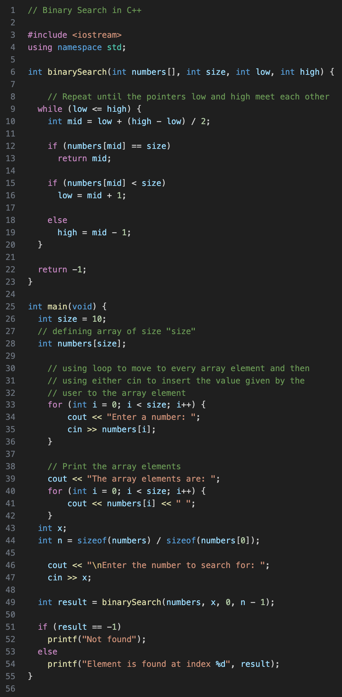

Written by
Carissa O'Connell
August 10, 2022; Updated: Jan 2023
- Binary Search
- Breadth First Search
- Depth First Search
- Merge Sort Algorithm
- Quicksort Algorithm
- Kruskal's Algorithm
- Floyd Warshall Algorithm
- Dijkstra’s Search
- Bellman Ford Algorithm
- Kadane's Algorithm
- Lee Algorithm
- Flood Fill Algorithm
- Floyd's Cycle Detection Algorithm
- Union Find Algorithm
- Topological Sort Algorithm
- KMP Algorithm
- Insertion Sort Algorithm
- Selection Sort Algorithm
- Counting Sort Algorithm
- Heap Sort Algorithm
- Kahn's Topological Sort Algorithm
- Huffman Coding Compression Algorithm
- Quickselect Algorithm
- Boyer-Moore Majority Vote Algorithm
- Euclid's Algorithm
Binary Search is a searching algorithm for finding an element's position in a sorted array. A binary search first divides a large array into two smaller subarrays and then recursively (or iteratively) operates on the subarrays. But instead of working on both subarrays, it discards one subarray and continues searching on the second subarray. This decision of discarding one subarray is made in just one comparison.
The binary search reduces the search space, which initially starts as the entire array, by halving the array size at each step. It starts by comparing the mid-value in the search space to the target value. If the target value matches the middle element, its position in the array is returned. Otherwise, it would discard half the search space based on the comparison result.
Read more about Binary Search at Programiz
Breadth–first search (BFS) is an algorithm for traversing or searching tree or graph data structures. It starts at the tree root (or some arbitrary node of a graph, sometimes referred to as a ‘search key’) and explores the neighbor nodes first before moving to the next-level neighbors.
The non-recursive implementation of BFS is similar to the non-recursive implementation of DFS but differs from it in two ways:
- It uses a queue instead of a stack.
- It checks whether a vertex has been discovered before pushing the vertex rather than delaying this check until the vertex is dequeued.
Read more about Breadth First Search at Programiz
A Depth–first search (DFS) is a way of traversing graphs closely related to the preorder traversal of a tree. DFS is an algorithm used for searching a graph or tree data structure. It starts at the root(top) of the tree node and goes as far as it can down the branch(path), then backtracks until it finds an unexplored path, and then explores it. The algorithm continues until the entire graph is explored.
DFS uses a stack data structure to keep track of the visited vertices.
The basic strategy is to explore the edges of the recently discovered vertex and to only visit the edges that are unexplored. Visited vertices are marked as visited so when the DFS method is called again and a vertex has been visited, the search backtracks to an unvisited vertex.
Read more about Depth First Search at Programiz
Merge sort divides a large array into two smaller subarrays, recursively sorts the subarrays, and then merging the sorted subarrays back together to form the final sorted array. It continues to halve the arrays until it can no longer be divided.
Read more about the Merge Sort Algorithm at Programiz
Quicksort is a sorting algorithm based on the divide and conquer algrithm that picks an elements as a pivot and partitions the given array around the picked pivot, by placing the pivot in its correct position in the sorted array. The purpose of the partition is to put the pivot into place, then it recursivly calls itself on each side of the pivot putting smaller elemnts to the left of the pivot and all the greater elements to the right of the pivot.
Read more about the Quicksort Algorithm at Programiz
The algorithm works by sorting the graph's edges by weight, then taking the edge with the lowest weight from the graph and adding it to the tree. This process repeats until all the vertices are included in the tree. Kruskal's algorithm is a minimum spanning tree algorithm that takes a graph as input and finds the subset of the edges of that graph. This input forms a tree that includes every vertex, where the total weight of all the edges in the tree is minimized.
Read more about Kruskal's Algorithm at Programiz
Floyd-Warshall computes the shortest distances between every pair of vertices in the input graph. Floyd-Warshall can take what you know from the graph of vertices and distances between each vertex, to give you the optimal route.
If the graph contains only positive edge weights, one solution would be to run Dijkstra’s algorithm V times. If the graph contains negative edge weights, the solution would be to run the Bellman–Ford once from each vertex to find all-pairs shortest paths. Floyd–Warshall algorithm is an algorithm for finding the shortest paths in a weighted graph with positive or negative edge weights (but with no negative cycles).
Create a |V| x |V| matrix, M, that will describe the distances between vertices
For each cell (i, j) in M:
if i == j:
M[i][j] = 0
if (i, j) is an edge in E:
M[i][j] = weight(i, j)
else:
M[i][j] = infinity
for k from 1 to |V|:
for i from 1 to |V|:
for j from 1 to |V|:
if M[i][j] > M[i][k] + M[k][j]:
M[i][j] = M[i][k] + M[k][j];
Read more about the Floyd Warshall Algorithm at Programiz
Read more about the Floyd Warshall Algorithm at Techie Delight
Dijkstra’s Algorithm is used to find the shortest paths between nodes in a graph. For a given source node in the graph, the algorithm finds the shortest path between that node and every other node. It can also be used for finding the shortest paths from a single node to a single destination node by stopping the algorithm once the fastest route to the destination node has been determined.
Dijkstra’s Algorithm uses a priority queue to greedily select the closest vertex that has not yet been processed and performs this relaxation process on all of its outgoing edges.
Read more about the Dijkstra’s Search Algorithm at Programiz
Bellman-Ford is a single source shortest path algorithm that determines the shortest path between a given source vertex and every other vertex in a graph. This algorithm can be used on both weighted and unweighted graphs. Bellman–Ford algorithm is slower than Dijkstra’s Algorithm, but it can handle negative weights edges in the graph, unlike Dijkstra’s.
The Bellman-Ford algorithm’s primary principle is that it starts with a single source and calculates the distance to each node. The distance is initially unknown and assumed to be infinite, but as time goes on, the algorithm relaxes those paths by identifying a few shorter paths. Hence it is said that Bellman-Ford is based on “Principle of Relaxation“.
Read more about the Bellman Ford Algorithm at Programiz
Kadane's Algorithm employs a dynamic programming approach that iteratively calculates the maximum subarray sum ending at each position in the array. Kadane's Algorithm is a linear time algorithm used to find the maximum subarray sum in a given array. A subarray is defined as a contiguous subset of elements within the array. The Algorithm handles positive and negative numbers very efficiently, which makes it a versatile tool for solving many problems involving subarrays.
Read more about the Kadane's Algorithm at Neetcode
Back to index of AlgorithmsThe Lee algorithm is one possible solution for maze routing problems based on Breadth–First search. If the maze is given in the form of a binary rectangular matrix the algorithm can be used to find the shortest path in the maze from a given source to a given destination. The Lee algorithm always gives an optimal solution, if one exists, but it is slow and requires considerable memory.
Read more about the Lee Algorithm at Codesdope
Back to index of AlgorithmsThe Flood Fill Algorithm, which is also known as the seed fill, determines the area connected to a given node in a multi-dimensional array. It is used in the “bucket” fill tool of a paint program to fill connected, similarly colored areas with a different color and in games such as Go and Minesweeper for determining which pieces are cleared. When applied on an image to fill a particular bounded area with color, it is also known as boundary fill.
The Flood Fill Algorithm can be used using Breadth-First Search or Depth-First Serach.
Read more about the Flood Fill Algorithm at Medium
Floyd’s cycle detection algorithm is a pointer algorithm that uses only two pointers, which move through the sequence at different speeds. The idea is to move the fast pointer twice as quickly as the slow pointer, and the distance between them increases by one at each step. If we both meet at some point, we have found a cycle in the list; otherwise, no cycle is present if the end of the list is reached. It is also called the “tortoise and the hare algorithm”.
Read more about Floyd's Cycle Detection Algorithm at Medium
In a Union-Find data structure, each subset represent a backwards tree with pointer from a node to its parent and nodes in the tree are elements of this subset [1]. A Union-Find data structure also called Disjoint set data structure is to maintain a set of elements partitioned into a number of mutually disjoint(non-overlapping) subsets. So, no elements belong to more than one set.
The Union Find Algorithm, also known as Disjoint-Set data structure, manages elements in non-overlapping subsets. It's primarily used for graph connectivity problems, offering two operations: Union, to merge sets, and Find, to identify a set's leader.
Read more about the Union Find Algorithm at Scaler
The topological sort algorithm takes a directed graph and returns an array of the nodes where each node appears before all the nodes it points to. Topological sort is a graph traversal that every node in the graph is visited until all of its dependencies are visited. Only directed acyclic graph(DAG) can have topological orderings which can align all the nodes in a linear line.
Read more about the Topological Sort Algorithm at Medium
The KMP (Knuth-Morris-Pratt) Pattern Search is used to check for plagirism in documents, bioinformatics and DNA sequencing, digital forensics, spelling checkers, spam filters, serach engines or for searching content in large databases, and as an intrusion detection system. The KMP calculation utilizes the deteriorating property (design having the same sub-designs showing up more than once in the example) of the example and further develops the most pessimistic scenario running time complexity to O(n). The thought for the KMP calculation is: at whatever point the string gets mismatched, we definitely know a portion of the characters in the text of the following window. We will exploit this data to try not to coordinate with the characters that we realize will coordinate.
Read more about the KMP Algorithm at Scaler
The Insertion Sort Algorithm sorts an array by dividing it into a sorted and an unsorted region. The sorted region starts with the first element, and with each iteration, it “inserts” the next element into the correct position within the sorted region.
- Arrays with a small number of elements
- Arrays with a few elements that need to be sorted
Read more about the Insertion Sort Algorithm at Programiz
The purpose of the Selection Sort Algorithm is to sort an array by repeatedly iterating the unsorted list to find the minimum element and places the element at the beginning of the unsorted list.
Read more about the Selection Sort Algorithm at Programiz
The purpose of the Counting Sort Algorithm counts the frequency of each distinct element in the input array and uses that information to place the elements in their correct positions. The count is stored in an auxiliary array and the sorting is done by mapping the count as an index of the auxiliary array. It is a non-comparison based sorting algorithm that works well with a limited range of input values.
Read more about the Counting Sort Algorithm at Programiz
The purpose of the Heap Sort Algorithm is to sort an array using a binary heap data structure. The heap data structure is a complete binary tree because for every node, the value of its children is less than or equal to its own value.
Read more about the Heap Sort Algorithm at Programiz
The topological sort algorithm arranges the vertices in a Directed Acyclic Graph (DAG) linearly. It returns an array, vector, or list, that consists of the nodes where each node appears BEFORE all the nodes it points to.
- Kahn's Algorithm
- Depth-first Search
In Khan's algorithm of toplogical sort, it looks for the nodes that do not have any incoming edges, or has an indegree of 0, and then removes their outgoing edges (making its outdegree equal to 0).
- Find a vertex that has an indegree of 0 (it has no incoming edges)
- Remove all the edges from that vertex that go outward (makes outdegree = 0, remove outgoing edges)
- Add that vertex to the array representing the topological sorting of the graph
- Repeat till there are no vertices left
Read more about Kahn's Topological Sort Algorithm at Scaler
Huffman Coding is a technique of compressing data to reduce its size without losing any of the details. It does this by using variable-length strings to represent symbols depending on how frequently they appear.
The Huffman coding algorithm takes in information about the frequencies or probabilities of a particular
symbol occurring. It begins to build the prefix tree from the bottom up, starting with the two least
probable symbols in the list. It takes those symbols and forms a subtree containing them, and then
removes the individual symbols from the list.
Read more about the Huffman Coding Compression Algorithm at Programiz
Read more about the Huffman Coding Compression Algorithm at Brilliant
The Quick Select Algorithm is an efficient selection algorithm that is used to find the k-th smallest element in an unordered list. It is an in-place algorithm, meaning that it doesn't require any additional memory to be allocated apart from input list space. Similar to Quick Sort, the Quick Select Algorithm is also based on the divide-and-conquer paradigm, using the concept of partitioning the elements of the input list.
QuickSort is a fast sorting algorithm that works by splitting a large array of data into smaller sub-arrays. This implies that each iteration splits the input into two components, sorts them and then recombines them. The technique is highly efficient for big data sets because its average and best-case complexity is O(n*logn).
Select a Pivot Element - It can be a random element
- The first or last element
- Middle element
Rearrange the Array - The pivot element is compared to all of the items starting with the first index. If the element is greater than the pivot element, a second pointer is appended.
- When compared to other elements, if a smaller element than the pivot element is found, the smaller element is swapped with the larger element identified before.
Divide the Subarrays - First, sort the segment of the array to the left of the pivot, and then sort the segment of the array to the right of the pivot.
Read more about the Quickselect Algorithm at Algorithm Examples
Read more about the Quickselect Algorithm at Built In
The Boyer-Moore voting method is used for determinig the majority elemnt amongst elements with more than N/2 occurences.
This algorithm has two phases: finding the majority element and counting how many times it appears in the array.
The majority elemnt is one that appears more than half of the time in the input elements. However, if there is no majority, the algorithm will not recognize this and will continue to output one of the items.
- Begin by initializing two variables, num and a counter count, both of which are set to 0.
- Now we’ll begin iterating over the number and for each element x.
- We first check to see if the count is 0, and then we assign num to x.
- Then we check to see if the current num is equal to x, if not, we decrease the count by one, else we increment it by one.
- Reset the counter to zero.
- Find the frequency of the num variable by looping through the nums array.
- Now, if the count is larger than N/2, we return num; otherwise we return -1.
Read more about the Boyer-Moore Majority Vote Algorithm at Top Coder
The Euclidian Algorithm is a recursive algorithm that will find the highest common factor (HCF) of two numbers.
The HCF is the largest value that will divide without a remainder for both values. It is base on the obeservation that
the
- Find the minimum value between two given numbers
- Then, divide both numbers by the minimum value
- If either of the divisions results in a remainder, decrease the minimum value by one and continue dividing
- This process repeats until the minimum value can divide both numbers evenly; that is the HCF
Read more about the Euclid's Algorithm Algorithm at CodeCademy

Carissa O'Connell
Aloha! I am a passionate software developer looking to help people create programs that help improve business efficiency, connect with nature, and play with logic.